L6 Load Balancers and Application Gateways
1. Implementing Azure Load Balancers
1-1 Load balancer overview
1. What Is a Load Balancer
- Azure resource
- Distribute inbound requests to pools of systems
- Check for service health
2. How Do Load Balancers Work?
- Front-end and back-end
- Layer 4 (transport) rules
- Network Address Translation (NAT) rules
- Basic and standard SKUs
-
TCP, HTTP, and HTTPS health probes
-
3. The front end
- Public IP
- Private Azure IP that could be used as a private load balancer.
-
4. The back end（Receive the requests from the client）
- Pool of servers,
- App services
- Scale sets
-
6. Set of layer 4 (transport) rules which the load balancer uses to decide to which servers those requests should be sent to
-
7. Network Address Translation rules let the load balancer decide when a request is sent to a specific port, if it should be sent to one of the servers specifically in the back end.
-
8. HTTPS health probes to check if the back end servers are up and running or if they should be not used for traffic redirection
9. Load-Balanced Communication
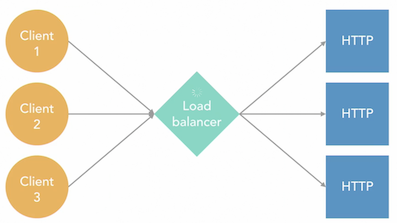
1-2 External and internal load balancers
1. External load balancers
- Maps public IP address and ports to internal tagrets
- Applies load balancing rules
- Uses Port Address Translation(PAT)
- Typically used for websites and similar services
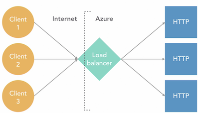
- ELB will receive communications from the different clients that are on the internet, and send those requests to internal targets like a web server, or a scale set.
- Port Address Translation which lets the load balancer modify the port where the client is connecting.
- So on the external side where the load balancer has the public IP address, it could be receiving connections to the Port 80 but then those connections could be re-sent to the Port 8080 on the back-end.
2. Internal Load Balancers
- Directs traffic only between internal resources
- There is no outgoing IP address translation
- Typical uses include
- Connections between virtual machines (VMs) in the same virtual network (vnet)
- Multitier applications
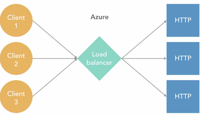
1-3 Configure a load balancer front-end
Add frontend IP Address
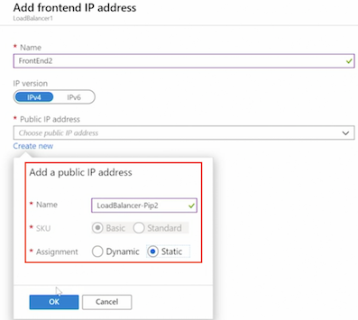
1-4 Configure a load balancer back-end
- Availability Set
- Single Virtual Machine
- Virtual Machine scale set
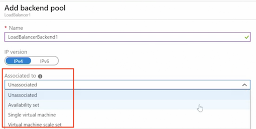
1-5 Configure a load balancer health probe
health probe used to check if the backend pools are working correctly
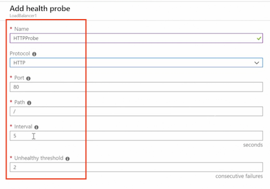
1-6 Configure load balancing rules
forend Port => Backend Port
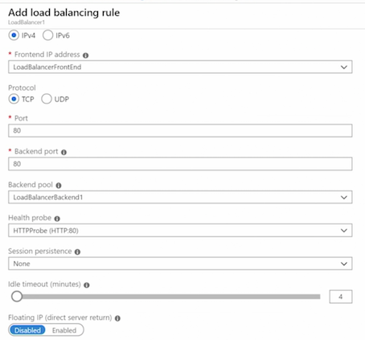
1-7 Configure NAT port-forwarding rules
Add inbound NAT rule
- Protocol
- Port: 3389
- Target virtual machine
- Network Ip configuration
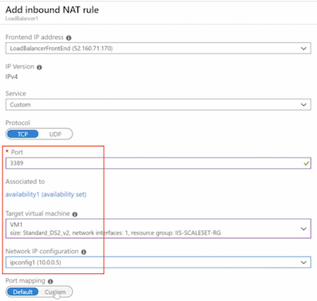
1-8 Create a load balancer using PowerShell
$RG = New-AzResourceGroup -ResourceGroupName "LoadBalancer-RG" -Location "WestUS"
$IP = New-AzPublicIpAddress -ResourceGroupName "LoadBalancer-RG" -Location "WestUS" -Name "LoadBalancerPubIP"
$frontEnd = New-AzLoadBalancerFrontendlpConfig -Name "FrontEnd1" -PubliclPAddress $IP
$backEnd New-AzLoadBalancer8ackendAddressPoolConfig -Name "BackEnd1"
$healthProbe New-AzLoadBalancerProbeConfig -Name "HTTP-Probe" `
-RequestPath "/" -Protocol HTTP -Port 80 -IntervalInSeconds 30 -ProbeCount 2
$loadbBalancerRule = Now-AzLoadBalancerRuleConfig -Name "LBRulel" `
-FrontendlpConfiguration $frontEnd -BackendAddressPool $backEnd `
-Protocol TCP -FrontendPort 80 -BackendPort 80 -Probe $healthProbe
$LoadBalancer = New-AzLoadBalancer -Name "PS-LoadBalancer" -ResourceGroupName "LoadBalancer-RG" -Location "WestUS" `
-FrontEndIpConfiguration $frontEnd -BackendAddressPool $backEnd -Probe $healthProbe -LoadBalancingRule $loadbBalancerRule
1-9 Configure a load balancer using PowerShell
$loadBalancer = get-azloadbalancer -Name "PS-Loadbalancer"
$backend = Get-AzLoadBalancerBackendAddressPoolConfig -Name "BackEnd1" -LoadBalancer $loadBalancer
$loadBalancer | Add-AzLoadBalancerInboundNatRuleConfig -Name "RemoteDesktopVMlRule" `
-FrontendIpConfiguration $loadBalancer.FrontendIpConfigurations[0] -Protocol "Tcp" `
-FrontendPort 33890 -BackendPort 3389
$availabilitySet = Get-AzAvailabilitySet -ResourceGroupName "IIS-ScaleSet-RG" -Name "Availability1"
ForEach ($vm in $availabilitySet.VirtualMachinesReferences) {
$networkInterface = Get-AzNetworklnterface | Where-Object {$_.VirtualMachine.id - like $vm.id}
$networkInterface.IpConfigurations[0].LoadBalancerBackendAddressPools = $backend
Set-AzNetworkInterface -NetworkInterface $networkInterface
}
$loadBalancer | Set-AzLoadBalancer
$loadBalancer | Remove-AzLoadBalancer
2. Implementing Azure Application Gateways
2-1 Application gateway overview
1. What Is an Application Gateway?
- Web traffic load balancer
- Operates on OSI Layer 7 (application)
- Which means they understand the packets that go from the clients to the servers. And they see, for example, the URL paths that they are using
- Route requests based on URI path and host headers
2. Some Application Gateway Features
- Redirection, multihosting, and URL-based routing
- Also multihosting and URL-based routing, in case an Application Gateway is hosting more than a single website
- SSL/TLS termination
- Autoscaling and zone redundancy (Prevent downtime in the case an actual data center fails)
- Session affinity (attach a client to a specific server in the back end)
- AKS ingress controller (In the case you are using Kubernetes in your deployments)
2-2 Create an application gateway using the portal
Tier:
- Stanard1 WAF1
- Stanard2 WAF2
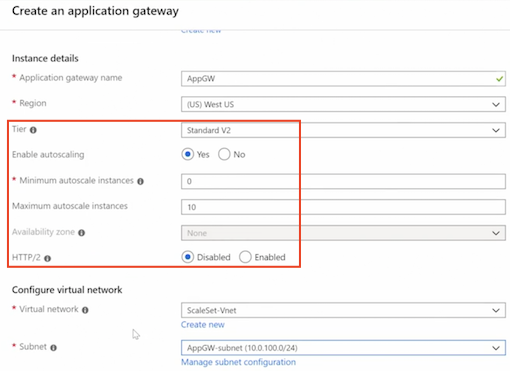
- FrontEnds
- Routing Rules
- Backend pools
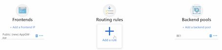
2-3 Implement an application gateway IP configuration
1. AppGW - Configuration
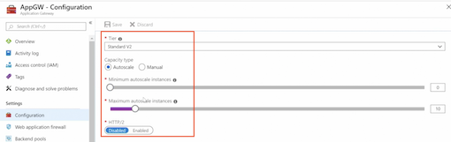
- Maximum: 125 instances
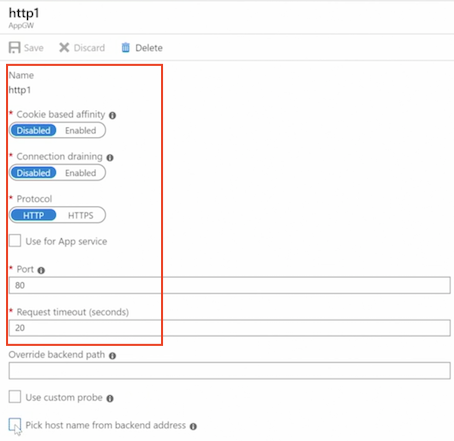
- The cookie based afinity: Which means all of the clients that come with the same cookie will be directed to the same servers.
- Connection draining: Prevent that servers are keeping certain connections open for too long.
- Enable or disable HTTPS and use it for the app service
- The time out for the connections and the back in path, in case one connection comes from a specific port.
2-4 Configure an application gateway backend pool
- Ip address or hostname
- Virtual Machine
- VMSS
- App services
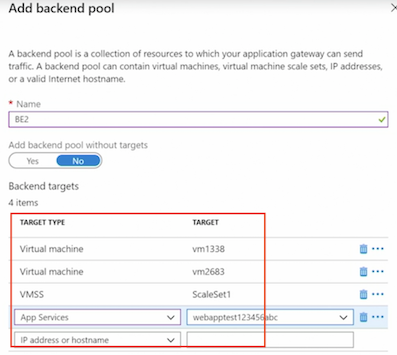
2-5 Configure an application gateway listener
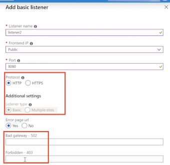
Enable SSL
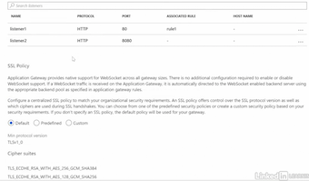
2-6 Configure an application gateway health probe
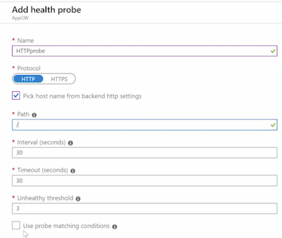
2-7 Configure application gateway routing rules
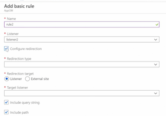
2-8 Create an application gateway using PowerShell
$vnet = Get-AzVirtualNetwork -Name "ScaleSet-Vnet" -ResourceGroupName "IIS-ScaleSet-RG"
$subnet = Get-AzVirtualNetworkSubnetConfig -Name "AppGW-subnet" -VirtualNetwork $vnet
$VMinterface1 = Get-AzNetworklnterface -ResourceGroupName "IIS-ScaleSet-RG" -Name "vm1338"
$VMinterface1IP = $VMinterface1.IpConfigurations[0].PrivateIpAddress
$VMinterface2 = Get-AzNetworkInterface -ResourceGroupName "IIS-ScaleSet-RG" -Name "vm2683"
$VMinterface2IP = $VMinterface2.IpConfigurations[0].PrivateIpAddress
##
$RG = New-AzResourceGroup -ResourceGroupName "AppGW-RG" -Location "WestUS"
$IP = New-AzPublicIpAddress -ResourceGroupName "AppGW-RG" -Location "WestUS" -Name "AppGW-PIP"
$internalIP = New-AzApplicationGatewayIPConfiguration -Name "internalIP" -Subnet $subnet
$frontend = New-AzApplicationGatewayFrontendIPConfig -Name "Frontend1" -PublicIPAddress $IP
$frontendPort = New-AzApplicationGatewayFrontendPort -Name "FrontendPort1" -Port 80
$backend = New-AzApplicationGatewayBackendAddressPool -Name "Backend1" -BackendIPAddresses $VMinterface1IP, $VMinterface2IP
$backendSettings = New-AzApplicationGatewayBackendkttpSetting -Name "backendlSettings" `
-Port 80 -Protocol Http -CookieBasedAffinity Disabled -RequestTimeout 60
$listener = New-AzApplicationGatewayHttpListener -Name "listener1" -Protocol HTTP `
-FrontendIPConfiguration $frontend -FrontendPort $frontendPort
$frontendRule = New-AzApplicationGatewayRequestRoutingRule -Name "rule1" -RuleType Basic `
HttpListener $listener -BackendAddressPool $backend -BackendHttpSettings $backendSettings
##
$appGatewaySKU = New-AzApplicationGatewaySku -Name Standard_v2 -Tier Standard_v2 -Capacity 2
$appGateway = New-AzApplicationGateway -Name "PS-AppGW" -ResourceGroupName "AppGW-RG" -Location "WestUS" `
-FrontEndIpConfiguration $frontEnd -FrontendPorts $frontendPort -RequestRoutingRules $frontendRule `
-GatewaylPConfigurations $internalIP -BackendAddressPool $backEnd -HttpListeners $listener -Sku $appGatewaySKU -backendhttpsettingscollection $backendsettings
2-9 Configure an application gateway using PowerShell
$appGw = Get-AzApplicationGateway -Name "PS-AppGW"
$appGw | Add-AzApplicatiomGatewayProbeConfig -Name "probel" -Protocol Http `
-PickHostNameFromeackendHttp5ettings -Path "/" -UnhealthyThreshold S -Interval 60 -Timeout 60
$appGw | Set-AzApplicationGatewaySku -Name Standard_v2 -Tier Standard_v2
$appGw | Set-AzApplicationGatewayAutoscaleConfiguration -MinCapacity 3 -MaxCapacity 15
$appGw | Set-AzApplicationGateway
2-10 Web application firewall overview
What Is a Web Application Firewall?
- Special version of an application gateway
- Prevents common exploits of web applications
- Based on OWASP (Open Web Application Security Project) core rule sets
- Detection and prevention modes
2-11 Configure a web application firewall
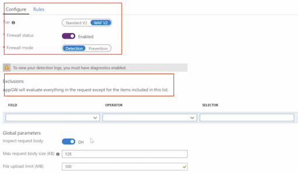
2-12 Configure a web application firewall using PowerShell
$appGw = Get-AzApplicationGateway -Name "PS-AppGW"
$appGw | Set-AzApplicationGatewaySku -Name WAF_v2 -Tier WAF_v2
Set-AzApplicationGatewayWebApplicationFirewallConfiguration -ApplicationGateway $appGw `
-Enabled $true -FirewallMode "Detection" -RuleSetType "OWASP" -RuleSetVersion "3.0"
$appGw | Set-AzApplicationGateway